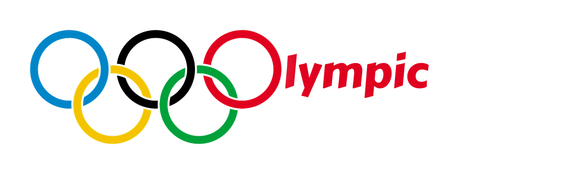

At first glance, the Olympics look like so-called fair Games: the best athletes compete, and the best win. But is it really that simple? The truth is much more nuanced. Medals are influenced by far more than talent alone. Athletes represent a country. Nowadays, the Games increasingly feel like a competition between nations, where the medal count is a source of national pride and international recognition.
Wealth, population, politics and opportunities all play a part in determining who gets to stand on the podium.
Throughout the race, several refreshment stands await you,
allowing you to explore five themes behind the Olympic Games:
gender representation, the geography of medal winners,
athlete body types, geopolitical disruptions,
and socioeconomic fairness.
Are you ready to scroll down and discover them?
Ready, Steady, Go!
Congratulations! You've reached the finish line! It's time to take a proper break! But first, let us give you a quick final talk! If you've made it this far, you may have noticed that Olympic success is NOT only a question of individual excellence. It is also shaped by access, institutions, national wealth, political stability, and the historical inclusion or exclusion of different groups.
Over time, the Games have become more inclusive, especially in terms of gender representation.
Yet large inequalities remain in which countries win medals,
which sports receive attention, and which bodies
are considered optimal for success.
The Olympics are therefore both a sporting event and a mirror of global inequalities.
Well done for seeing it through to the end! You can be proud of yourself!
You are now a well-informed, accomplished athlete who understands how inequalities
are reflected in the Olympic Games!